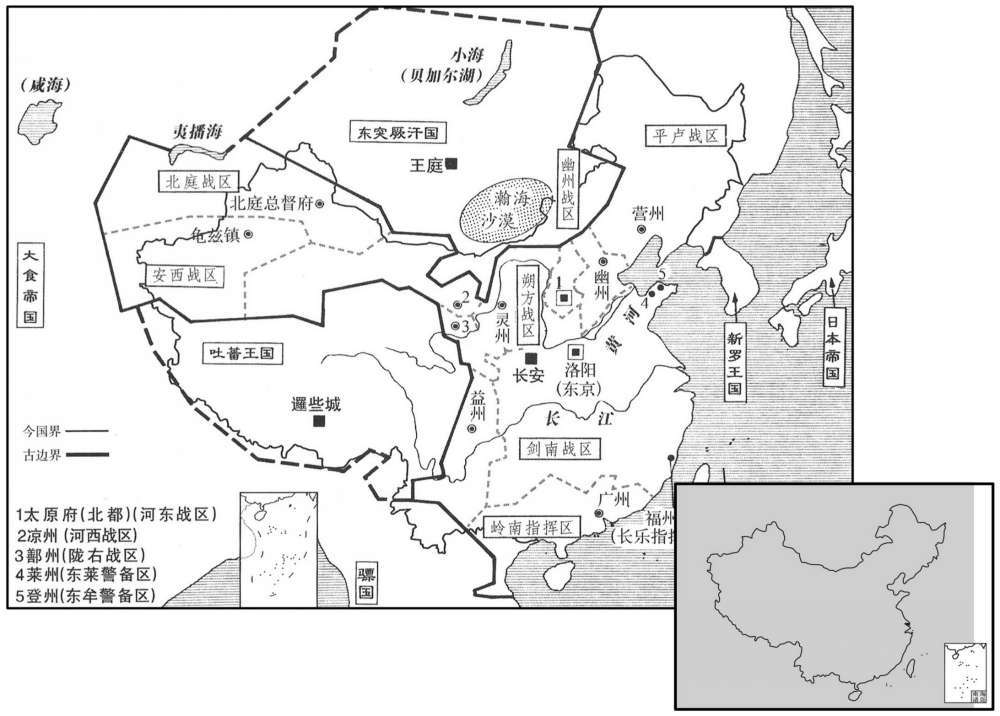

公元742年资治通鉴：本年记事、原文与白话对照
按原书编年位置阅读；追叙和史论不等于本年发生的事件。白话采用所据译本，缺译不以生成译文补齐。
卷215 · 本年记事
公元742年 · 唐玄宗至道大圣大明孝皇帝天宝元年
天宝元年〔（壬午、七四二）〕
上传原文的注释括号有异常，字符原样保留；无法可靠划分的段落默认全文显示。
本年事件索引（现代整理）

本年形势与背景参考图
春，正月，丁未朔，上御勤政楼〔帝于兴庆宫西南隅建二楼：花萼相辉楼在西临街，以燕兄弟；勤政务本楼在南，以修政事。〕受朝贺，〔朝，直遥翻。〕赦天下，改元。
本段缺少可靠对应白话，原文完整保留；未使用生成译文。
壬子，分平卢别节度，以安禄山为节度使。〔使，疏吏翻；下同。〕
本段缺少可靠对应白话，原文完整保留；未使用生成译文。
是时，天下声教所被之州三百三十一，〔被，皮义翻。考异曰：旧纪云「三百六十二」按地理志，开元二十八年，州府三百二十八，至此纔二年，不应遽增三十余州。今从唐历、会要、统纪。〕羁縻之州八百，置十节度、经略使以备边。安西节度抚宁西域，统龟兹、焉耆、于阗、疏勒四镇，治龟兹城，兵二万四千。〔焉耆治所在安西府东八百里；于阗在南二千里；疏勒在西二千余里。龟兹，音丘慈，又音屈佳。阗，徒贤翻，又徒见翻。〕北庭节度防制突骑施、坚昆，统瀚海、天山、伊吾三军，屯伊、西二州之境，治北庭都护府，兵二万人。〔突骑施牙帐在北庭府西北三千余里；坚昆在北七千里。瀚海军在北庭府城内，兵万二千人。天山军在西州城内，兵五千人。伊吾军在伊州西北三百里甘露川，兵三千人。骑，奇骑也。〕河西节度断隔吐蕃、突厥，〔断，丁管翻。吐，从暾入声。厥，九勿翻。〕统赤水。大斗、建康、宁寇、玉门、墨离、豆卢、新泉八军，张掖、交城、白亭三守捉，屯凉、肃、瓜、沙、会五州之境，治凉州，兵七万三千人。〔赤水军在凉州城内，兵三万三千人。大斗军在凉州西二百余里甘、肃二州界，兵七千五百人。建康军在凉州西二百里，兵五千三百人。宁寇军在凉州东北千余里，兵八千五百人。玉门军在肃州西二百里，管兵五千二百人。墨离军本月氏国，在瓜州西北千里，管兵五千人。豆卢军在沙州城内，管兵四千三百人。新泉军在会州西北二百里，管兵千人。张掖守捉在凉州南二百里，管兵五百人。交城守捉在凉州西二百里，管兵千人。白亭守捉在凉州西北五百里，管兵七千五百人。唐制：大曰军，小白守捉。赵珣聚米图经：自甘州西至肃周五百里；自肃州至西至瓜州四百五十里；自瓜州西至沙州二百八十里；自沙州西至伊州四百里。会州至盐州八百里，西至凉州六百里，南至宋镇戎军一百四十里，北至灵州六百里。〕朔方节度捍御突厥，统经略、丰安、定远三军，三受降城，安北、单于二都护府，屯灵、夏、丰三州之境，治灵州，兵六万四千七百人。〔经略军在灵州城内，兵二万七百人。丰安军在灵州西黄河外百八十里，兵八千人。定远军在灵州东北二百里黄河外，兵七千人。西受降城在丰州北黄河外八十里，兵七千人。安北都护府治中受降城，黄河北岸，兵六千人。东受降城在胜州东北二百里，兵七千人。振武军在单于都护府城内，兵九千人。降，户江翻。单，音蝉。夏，户雅翻。〕河东节度与朔方掎角以御突厥，统天兵、大同、横野、岢岚四军，云中守捉，屯太原府忻、代、岚三州之境，治太原原府，兵五万五千人。〔天兵军在太原城内，兵三万人。大同军在代州北三百里，兵九千五百人。横野军在蔚州东北一百四十里，兵三千人。岢岚军在岚州北百里，兵一千人。云中守捉在单于府西北二百七十里，兵七千七百人。忻州在太原府北八十里，兵七千八百人。代州至太原五百里，兵四千人。岚州在太原府西北二百五十里，兵三千人。岢，枯我翻。岚，卢含翻。〕范阳节度临制奚、契丹，统经略、威武、清夷、静塞、恒阳、北平、高阳、唐兴、横海九军，屯幽、蓟、妫、檀、易、恒、定、漠、沧九州岛之境，治幽州，兵九万一千四百人。〔经略军在幽州城内，兵三万人。威武军在檀州城内，兵万人。清夷军在妫州城内，兵万人。静塞军在蓟州城内，兵万六千人。恒阳军在恒州城东，兵六千五百人。北平军在定州城西，兵六千人。高阳军在易州城内，兵六千人。唐兴军莫州城内，兵六千人。横海军在沧州城内，兵六千人。景云元年，以嬴州鄚县置鄚州。开元十三年，以「鄚」字类「郑」字，改为漠州，寻又改莫州。契，欺讫翻，又音吃。恒，户登翻。蓟，音计。妫，居为翻。〕平节度镇抚室韦、靺鞨，统平卢、卢龙二军，榆关守捉，安东都护府，屯营、平二州之境，卢治营州，兵三万七千五百人。〔平卢军在营州城内，兵万六千人。卢龙军在平州城内，兵万人。榆关守捉在营州城西四百八十里，兵三千人。安东都护府在营州东二百里，兵八千五百人。靺鞨，音末曷。「榆」当作「渝」，注详见上卷。〕陇又节度备御吐蕃，统临洮、河源、白水、安人、振威、威戎、漠门、宁塞、积石、镇西十军，绥和、合川、平夷三守捉，屯鄯、廓、洮、河之境，治鄯州，兵七万五千人。〔临洮军在鄯州城内，兵万五千人。河源军在鄯州西百三十里，兵四千人。白水军在鄯州西北二百三十里，兵四千人。安人军在鄯州界星宿川西，兵万人。振威军在鄯州西三百里，兵千人。威戎军在鄯州西北三百五十里，兵千人。漠门军在洮州城内，兵五千五百人。宁塞军在廓州城内，兵五百人。积石军在廓州西百八十里，兵七千人。镇西军在河州城内，兵万一千人。绥和守捉在鄯州西南二百五十里，兵千人。合川手捉在鄯州南百八十里，兵千人。平夷手捉在河州西南四十里，兵三千人。洮，土刀翻。鄯，时战翻，又音善。〕剑南节度西抗吐蕃，南抚蛮獠，统天宝、平戎、昆明、宁远、澄川、南江六军，屯益、翼、茂、当、巂、柘、松、维、恭、雅、黎、姚、悉十三州之境，治益州，兵三万九百人。〔团结营在成都府成内，兵万四千人。天宝军在恭州东南九十里，兵千人。平戎军在恭州南八十里，兵千人。昆明军在巂州南，兵五千一百人。宁远军在巂州西，兵三百人。澄州守州在姚州东六百里，管兵二千人。南江军兵三百人。翼州兵五百人。茂州兵三百人。维州兵补百人。柘州兵五百人。松州兵二千八百人。当州兵五百人。雅州兵四百人。黎州兵千人。姚州兵三百人。悉州兵五千人。杜佑曰：当州江源郡在翼州西二百七十里，西北到故通轨县二百里，以西即是生羌。悉州在当州南八十里。黎州，汉沈黎郡也，东去一里，高山万重，更无郡县；西南去郡一里，高山万重；东北去郡五里，西北去郡二里，皆高山万重。茂州，刘昫曰：隋汶山郡，武德元年改曰会州，贞观八年改曰茂州，以郡界茂湿山为名。松州东至茂州三百里，西南至当州三百里，西北至吐蕃界九十里，南至翼州一百八十里。恭州，开元二十四年分静州广平县置，东至柘州一百里。悉州西北至当州八十里。獠，鲁皓翻。巂，音髓。〕岭南五府经略绥静夷、獠，统经略、清海二军，桂、容、邕、交四管，治广州，兵万五千四百人。〔经略军在广州城内，兵五千四百人。清海军在恩州城内，兵二千人。桂府兵千人。容府兵千一百人。邕府兵千七百人。安南府兵四千二百人。已上兵轻，税本镇以自给。〕此外又有长乐经略，福州领之，〔乐，音洛。〕兵千五百人。东莱守捉，莱州领之；东牟守捉，登州领之；兵各千人。凡镇兵四十九万人，〔捉，仄角翻。考异曰：此兵数，唐历所载也。旧纪：「是岁天下健儿、团结、彉骑等，总五十七万四千七百三十三。」此盖止言边兵，彼并京畿诸州彉骑数之耳。〕马八万余匹。〔安西府马二千七百匹，北庭瀚海军马四千二百匹，天山军马五百匹，伊吾军马三百匹，河西赤水军马万三千匹，大斗军马二千四百匹，建康军马五百匹，宁寇、玉门军共管马六百匹，墨离军马四百匹，豆卢军马四百匹，朔方经略军三千匹，丰安军马千三百匹，定远军马二千匹，西受降马千七百匹，中受降城马二千匹，东受降城马千七百匹，振武军马千六百匹，河东天兵军马五千五百匹，云中守捉马二千匹，大同军马五千五百匹，横野军马千八百匹，范阳经略军马五千四百匹，威武军马三百匹，清夷军马三百匹，静塞军马五百匹，平卢军马四千二百匹，卢龙军马五百匹，渝关守捉马百匹，安东府马七百匹，陇右临洮军马八千匹，河源军马六百五十匹，白水军马五百匹，安人军马二百五十匹，安人军马二百五十匹，威戎军马五十匹，漠门军马二百匹，宁塞军马五十匹，积石军马三百匹，剑南团结营马千八百匹，昆明军马二百匹。〕开元之前，每岁供边兵衣粮，费不过二百万；天宝之后，边将奏益兵浸多，每岁用衣二十万匹，粮百九十万斛，〔安西衣赐六十二万疋段，北庭衣赐四十八万疋段，河西衣赐百八十万疋段，朔方衣赐二百万疋段，河东衣赐百二十六万疋段，粮五十万石，范阳衣赐八十万疋段，粮五十万石，平卢失衣粮数，陇右衣赐二百五十万疋段，剑南衣赐八十万疋段，粮七十万石。将，即亮翻。〕公私劳费，民始困苦矣。
本段缺少可靠对应白话，原文完整保留；未使用生成译文。
甲寅，陈王府参军田同秀〔皇子陈王珪府参军也。〕上言：「见玄元皇帝于丹凤门之空中，告以『我藏灵符，在尹喜故宅。』」〔上，时掌翻；下上表同。〕上遣使于故函谷关尹喜台旁求得之。〔列先传曰：关令尹喜者，周大夫也。老子西游，喜先见其气候物色而迹之，果得老子；老子亦知其旨，为着道德经。使，疏吏翻。
本段缺少可靠对应白话，原文完整保留；未使用生成译文。
陕州刺吏李齐物穿三门运渠，辛未，渠成。〔新书曰：齐物凿砥柱为门以通漕，开其山巅为挽路，沃酰而凿之。然弃石入河，水益湍怒，舟不能入新门，候水涨以人挽舟而上。天子疑之，遣宦者按视，齐物厚赂宦者，还，言其便。陕，失冉翻。〕齐物，神通之曾孙也。〔淮安王神通。〕
本段缺少可靠对应白话，原文完整保留；未使用生成译文。
壬辰，群臣上表，以「函谷灵符，潜应年号；先天不违，〔易曰：先天而天不违。先，悉荐翻。〕请于尊号加『天宝』字。」从之。
本段缺少可靠对应白话，原文完整保留；未使用生成译文。
二月，辛卯，上享玄元皇帝于新庙。〔时置玄元庙于大宁坊西南角。〕甲午，享太庙。丙申，合祀天地于南郊，赦天下。改侍中为左相，中书令为右相，尚书左、右丞相复为仆射；〔开元初，改左、右仆射为尚书左、右丞相。复，扶又翻；下清复同。〕东都、北都皆为京，州为郡，刺吏为太守；改桃林县曰灵宝。〔隋开皇十六年置桃林县，取古者桃林之野以为县名，属洛州，唐属陕州。今以得玄元灵符，改曰灵宝。守，式又翻。〕田同秀除朝散大夫。〔朝直遥翻。散，悉亶翻。〕
本段缺少可靠对应白话，原文完整保留；未使用生成译文。
时人皆疑宝符同秀所为。间一岁，清河人崔以清复言：「见玄元皇帝于天津桥北，云藏符在武城紫微山，」〔武城，即汉之东武城县，与清河县皆属清河郡。〕欶使往求，亦得之。东都留守王倕知其诈，按问，果首服。〔使，疏吏翻。守，式又翻；下太守同。倕音垂。首，式又翻。〕奏之。上亦不深罪，流之而以。
本段缺少可靠对应白话，原文完整保留；未使用生成译文。
三月，以长安令韦坚为陕郡太守，〔陕郡，陕州，失冉翻。〕领江、淮租庸转运使。〔先天中，李杰为陕州刺吏，领水陆发运使；置使自杰始也。裴耀卿之后，命坚始以租庸使入衔。使，疏吏翻；下同。〕
本段缺少可靠对应白话，原文完整保留；未使用生成译文。
初，宇文融既败，言利者稍息。〔事见二百十三卷开元十八年。〕及杨慎矜得幸，〔事始二百十三卷二十一年。〕于是韦坚、王鉷之徒〔鉷，户公翻。〕竞以利进，百司有利权者，稍稍别置使以领之，旧官充位而已。〔史言诸使所由始。〕坚，太子之妃兄也，为吏以干敏称。上使之督江、淮租运，岁增巨万；上以为能，故擢任之。王鉷，方翼之曾孙也，〔自高宗至武后朝，王方翼着功名于西域。〕亦以善治租赋为户部员外郎兼侍御史。〔治，直之翻。〕
本段缺少可靠对应白话，原文完整保留；未使用生成译文。
李林甫为相，凡才望功业出己右及为上所厚、势位将逼己者，必百计去之；〔去，羌吕翻。〕尤忌文学之士，或阳与之善，啖以甘言而阴陷之。世谓李林甫「口有蜜，〔谓其言甘也。啖，徒滥翻，又徒览翻。〕腹有剑」。〔谓其心在害人也。〕
本段缺少可靠对应白话，原文完整保留；未使用生成译文。
上尝陈乐于勤政楼，垂帘观之。兵部侍郎卢绚谓上已起，垂鞭按辔，横过楼下；绚风标清粹，上目送之，深叹其蕴藉。〔绚，许县翻。蕴，于运翻。〕林甫常厚以金帛赂上左右，上举动必知之，乃召绚子弟谓曰：「尊君素望清崇，今交、广藉才，圣上欲以尊君为之，可乎﹖若惮远行，则当左迁；不然，则以宾、詹分务东洛〔谓以太子宾客、詹事分司东都也。〕亦优贤之命也，何如﹖」绚惧，以宾、詹为请。林甫恐乖众望，乃除华州史。〔华，户化翻。〕到官未几，诬其有疾，州事不理，除詹事、员外、同正。〔几，居岂翻。〕
本段缺少可靠对应白话，原文完整保留；未使用生成译文。
上又尝问林甫以「严挺之今安在﹖是人亦可用。」挺之时为绛州刺吏。林甫退，召挺之弟损之，谕以「上待尊兄意甚厚，盍为见上之策，奏称风疾，求还京师就医。」挺之从之。林甫以其奏白上云：「挺之衰老得风疾，宜且授以散秩，使便医药。」上叹咤久之；〔散，悉亶翻。咤，徙驾翻。〕夏，四月，壬寅，以为詹事，又以汴州刺史、河南采访使齐澣为少詹事，〔唐少詹事，正四品上。汴，皮变翻。使，疏吏翻。〕皆员外、同正，于东京养疾。澣亦朝廷宿望，故并忌之。
本段缺少可靠对应白话，原文完整保留；未使用生成译文。
上发兵纳十姓可汗阿史那昕于突骑施，至俱兰城〔俱兰国所都城也。俱兰，或曰俱罗弩，或曰屈浪拏，与吐火罗接。可，从刊入声。汗，音寒。骑，奇寄翻。考异曰：会要作「俱南城」；胡语不明耳。〕为莫贺达干所杀。突骑施大纛官都摩度来降，〔纛，徒到翻。降，户江翻。」〕六月，乙未，册都摩度为三姓叶护。
本段缺少可靠对应白话，原文完整保留；未使用生成译文。
秋，七月，癸卯朔，日有食之。
本段缺少可靠对应白话，原文完整保留；未使用生成译文。
辛末，左相牛仙客薨。八月，丁丑，以刑部尚书李适之为左相。
本段缺少可靠对应白话，原文完整保留；未使用生成译文。
突厥拔悉密、回讫、葛逻禄三部共攻骨咄叶护，杀之，推拔悉密酋长为颉跌施可汗，回讫、葛逻禄自为左、右叶护。〔厥，九勿翻。讫，下没翻。逻，郎佐翻。咄，当没翻。酋，慈由翻。颉，奚结翻。跌，徒结翻。〕突厥余众共立判阙特勒之子为乌苏米施可汗，以其子葛腊哆为西杀。〔哆，昌者翻。突厥以其亲属分掌东、西兵，号左、右杀，亦曰东、西杀。西杀，右杀也。
本段缺少可靠对应白话，原文完整保留；未使用生成译文。
上遣使谕乌苏令内附，乌苏不从。朔方节度使王忠嗣盛兵碛口以威之，〔使，疏吏翻。碛，七迹翻。考异曰：新、旧书忠嗣传皆曰：「是岁，忠嗣北伐，与奚怒皆战于桑干河，三败之，大虏其众。」又曰：「明年再破怒皆及突厥之众，自是塞外晏然。」按朔方不与奚相接，不知所云奚怒皆何也。今阙之。〕乌苏惧，请降，而迁延不至。忠嗣知其诈，乃遣使说拔悉密、回讫、葛逻禄使攻之乌苏遁去。忠嗣因出兵击之，取其右厢以归。〔击垂亡之虏，犹不肯轻用其兵，此王忠嗣所以为善将也。突厥左、右杀所部，谓之左、右厢。降，户江翻。说，输芮翻。讫，下没翻。逻，郎佐翻。〕
本段缺少可靠对应白话，原文完整保留；未使用生成译文。
丁亥，突厥西叶护阿布思及西杀葛腊哆、默啜之孙勃德支、伊然小妻、毗伽登利之女帅部众千余帐，相次来降，〔意此皆突厥右厢之众也。啜，陡劣翻。伽，求迦翻。帅，读曰率。考异曰：实录、旧纪皆云：「突厥阿布思〔及默啜可汗〕之孙登利可汗之女与其党属来降。」唐历云：「乌苏米施可汗遁逃，其西叶护阿布思及毗伽可汗、可敦、男西杀葛腊哆率其部千余帐来降。」旧王忠嗣传云：「三部落攻米施可汗，走之，忠嗣因出兵伐之，取其右厢而归。其西叶护及毗伽可敦、男葛腊哆率其部落千余帐入朝。」突厥传云：「西杀妻子及默啜之孙勃德支特勒、毗伽可汗女大洛公主、伊然可汗小妻余塞匐、登利可汗女余烛公主及阿布思、颉利发等并帅其部众相次来降。」今参取用之。〕突厥遂微。九月，辛亥，上御花萼楼宴突厥降者，〔考异曰：「辛卯」。按长历，是月癸卯朔，无辛卯。唐历云「九月辛卯」，亦误也。〕赏赐甚厚。
本段缺少可靠对应白话，原文完整保留；未使用生成译文。
护密先附吐蕃，戊午，其王颉吉里匐遣使请降。〔颉，奚结翻。匐，蒲北翻。〕
本段缺少可靠对应白话，原文完整保留；未使用生成译文。
冬，十月，丁酉，上幸骊山温泉；〔【张：「泉」下脱「十一月」。】〕己巳，还宫。
本段缺少可靠对应白话，原文完整保留；未使用生成译文。
十二月，陇右节度使皇甫惟明奏破吐蕃大岭军；戊戌，又奏破青海道莽布支营三万余众，斩获五千余级。庚子，河西节度使王倕奏破吐蕃渔海及游奕等军。〔史言明皇喜边功，故边帅告捷者相继。倕，音垂。〕
本段缺少可靠对应白话，原文完整保留；未使用生成译文。
是岁，天下县一千五百二十八，乡一万六千八百二十九，户八百五十二万五千七百六十三，口四千八百九十万九千八百。
本段缺少可靠对应白话，原文完整保留；未使用生成译文。
回讫叶护骨力裴罗遣使入贡，〔考异曰：旧传云：「天宝初，其酋长叶护颉利吐发遣使入朝，封奉义王。」唐历：「天宝三载，突厥拔志蜜可汗又为回讫葛罗禄等部落袭杀之，立回讫为主，是为骨咄禄毗伽阙可汗，遣使立为奉义王，又加怀仁可汗。」新突厥传云：「回讫葛逻禄拔悉蜜可汗，奉回讫骨力裴罗定其国，是为国咄禄毗伽阙可汗」。按奉义王怀仁可汗是一人，而新突厥回讫传其名不同；然新传自吐迷度以来，世系皆可谱，今从之。〕赐爵奉义王。〔明末册为可汗也。〕
本段缺少可靠对应白话，原文完整保留；未使用生成译文。